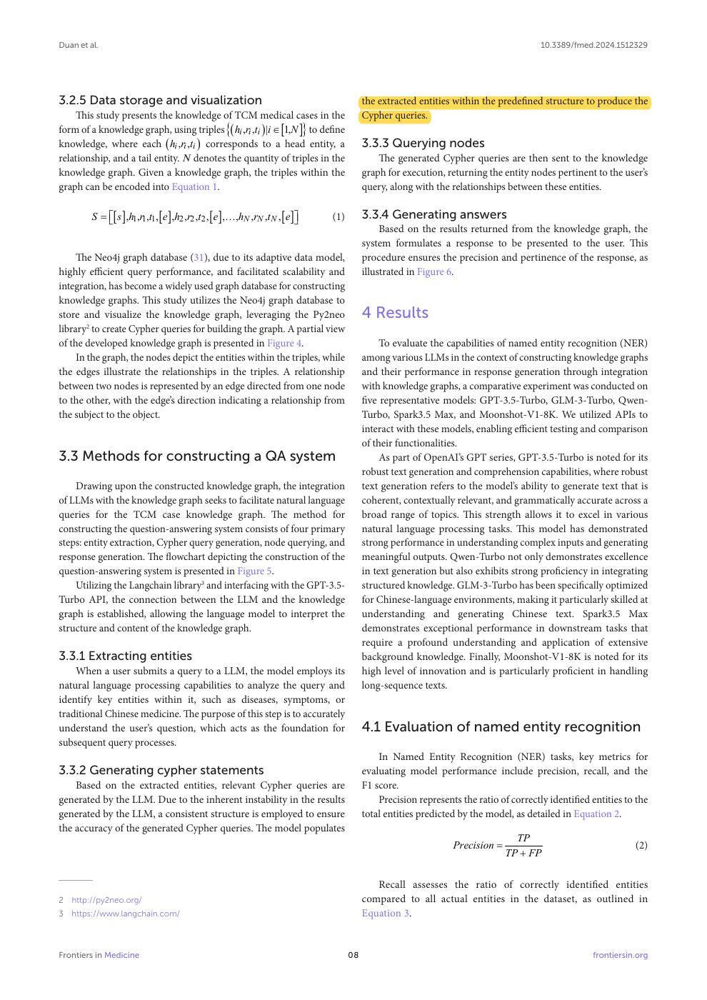
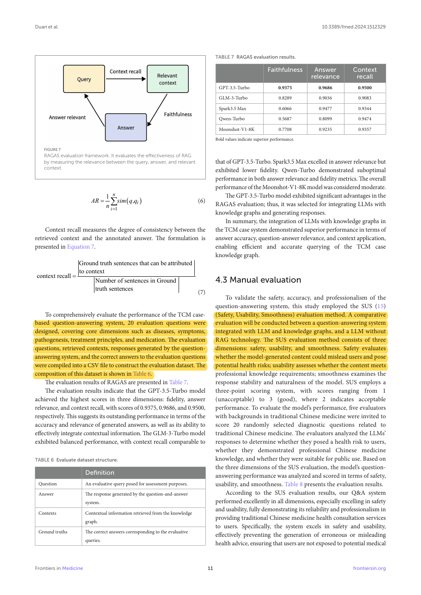

Bounded Cypher query interface
Original PDF page 8. Extracted entities populate a predetermined Cypher structure.
Open marked PDF at this pageOpen unaltered PDF at this pageOpen local marked screenshotPublisher source

Yuchen Duan, Qingqing Zhou, Yu Li, Chi Qin, Ziyang Wang, Hongxing Kan, and Jili Hu · 2025
Frontiers in Medicine, vol. 11 (2024), article 1512329; published 7 January 2025
How can a language model make historical TCM case knowledge accessible through natural-language queries?
The authors selected 679 complete case records across 41 diseases. LLM entity extraction was followed by expert terminology normalization, manual checking, and Neo4j storage. Query processing extracted entities, inserted them into a predefined Cypher structure, queried graph nodes, and generated an answer. Five model APIs were compared on 200 annotated sentences. QA evaluation used 20 questions, RAGAS, and five TCM-background evaluators rating safety, usability, and smoothness on a three-point scale.
GLM-3-Turbo had the strongest reported entity-extraction F1 (0.9617). GPT-3.5-Turbo had the strongest reported RAGAS scores: faithfulness 0.9375, answer relevance 0.9686, and context recall 0.9500. Those are retrieval/generation evaluation scores, not faculty agreement on OSCE marks.
The evaluation is small and concerns case querying. Its “SUS” means Safety, Usability, Smoothness, not the standard ten-item System Usability Scale. It does not evaluate herb–drug interaction safety, disclosure timing, automatic-failure enforcement, or deterministic clinical judging. The attachment’s claim of deterministic safety guardrails is stronger than the demonstrated method.
The reusable idea is a controlled interface between natural language and structured queries: semantic interpretation can populate a bounded schema while ordinary code queries authoritative data. DualGraph-OSCE can use the same separation for evidence events and rule predicates. Its innovation must remain in the paired permission/assessment execution rather than claiming that LLM plus KG or structured extraction is new. The station rules remain faculty-defined; a language model cannot invent a penalty merely because a medically plausible relation was retrieved.
Related work: domain KG-assisted QA and structured extraction. Method rationale: explain why semantic matching and logical execution have different responsibilities. Use this citation only if the paper discusses the clinical KG layer in enough detail.
This is a proposed paraphrase for our manuscript, not a quotation from the source and not a reported result of DualGraph-OSCE.
Page numbers refer to the physical pages of the unaltered publisher PDF. Yellow marks identify the cited text; the whole page is shown so its context remains visible.
Original PDF page 8. Extracted entities populate a predetermined Cypher structure.

Original PDF page 11. The small QA set and its RAGAS evaluation are explicit.

Original PDF page 11. This acronym is not the standard System Usability Scale.
